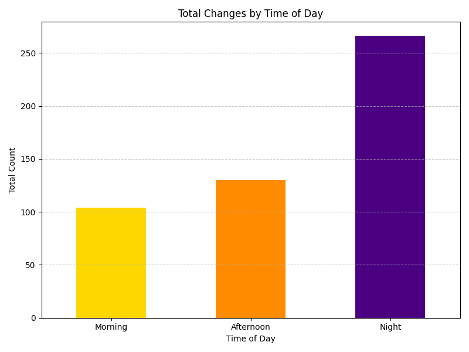

Current Station
Loading...
1
2
3
Live Passenger Count at Station 1
Live Passenger Count at Station 2
Live Passenger Count at Station 3
Initialize/Import CSV
Export Full CSV
Debug Data
Time of Day Passenger Trends

These are the observations for three days entries:18th,19th,20th